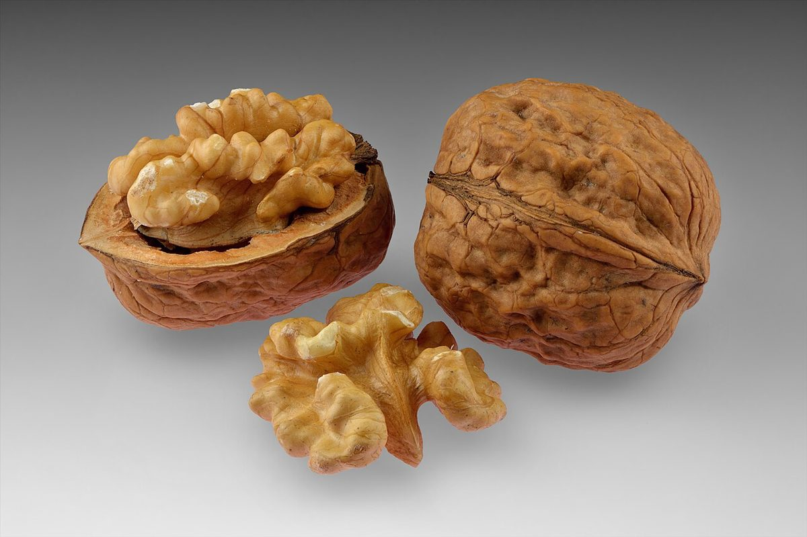
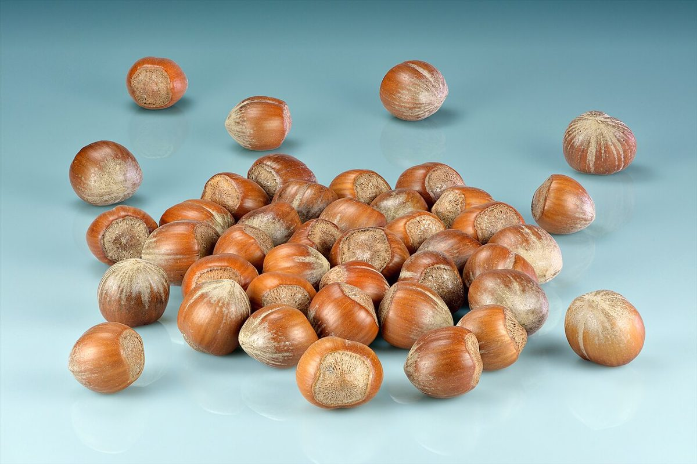
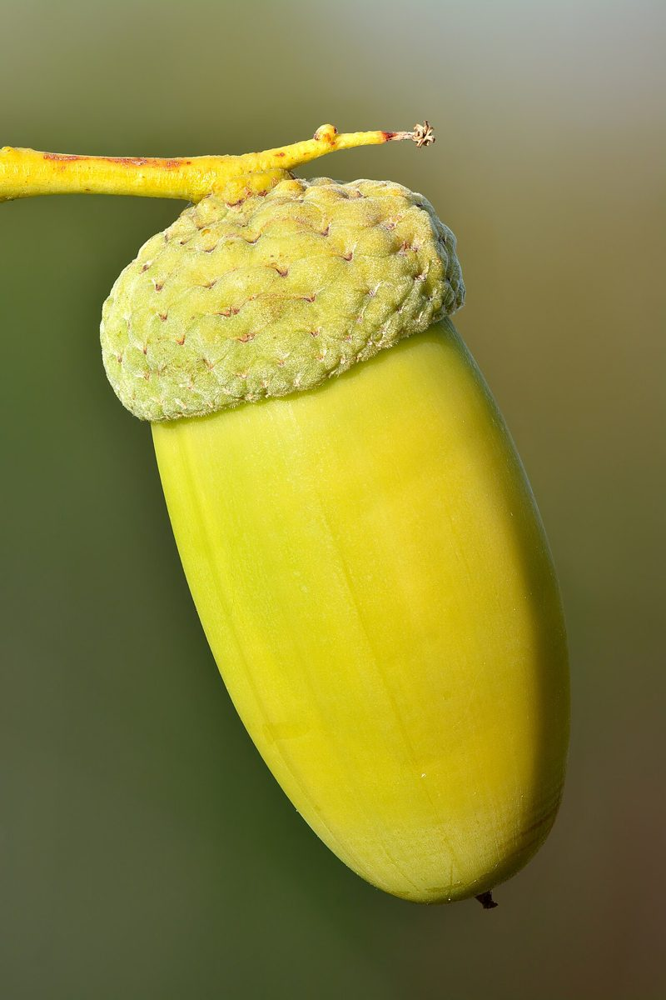
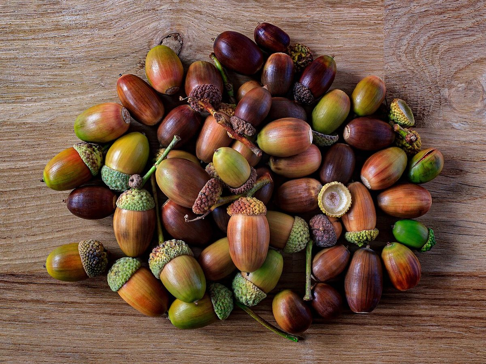
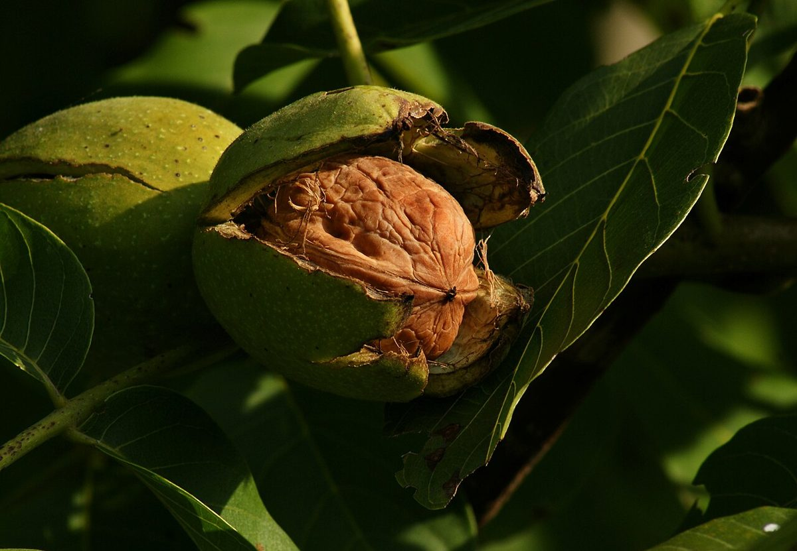

ベーカリー / 愛知県知多市
ベーカリーくるみ
愛知県知多市にあるベーカリー「ベーカリーくるみ」のご案内ページです。営業時間やメニューなど、詳しいことは準備中。お電話は 090-4150-4138、Instagramもあります。
制作側の連想
「くるみ」と「リスの隠し場所メモ」
これは制作側の連想で、お店の理念・由来とは無関係です。店名の由来は分かりません。制作側は「くるみ」から木の実を、Instagramのアカウント名に含まれる「risu」からリスを連想しました。リスは木の実を地面のあちこちに隠すと言われます。そこでこのサイトは、リスが隠し場所を書き留めた手書きのメモに見立て、5つのページを5か所の隠し場所として並べています。
木の実の標本
集めてみた木の実たち(イメージ)
写真は知多市やお店のものではありません。連想した木の実を、国外・撮影地不明のフリー素材から並べたものです。




ご案内
お店のこと(確認できたものだけ)
| 所在地 | 〒478-0036 愛知県知多市新舞子竜57−７ |
|---|---|
| 電話 | 090-4150-4138 |
| 営業時間 | 準備中 |
| 定休日 | 準備中 |
| ご予約 | 準備中 |
| 駐車場 | 準備中 |
| SNS | Instagram @kurumipanrisu |